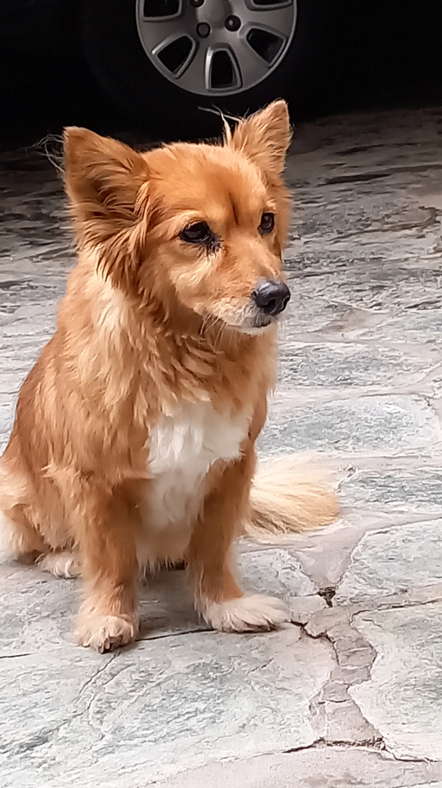
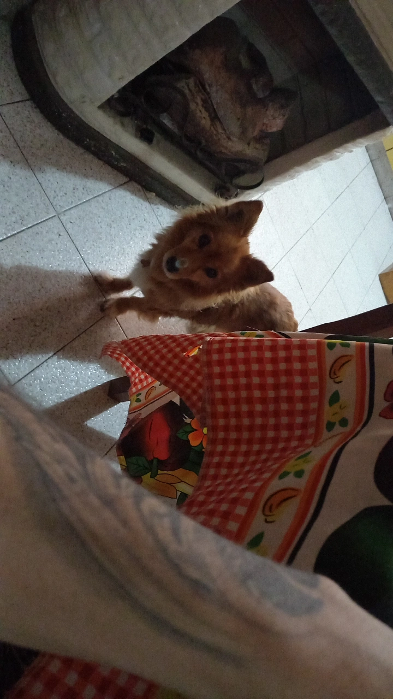
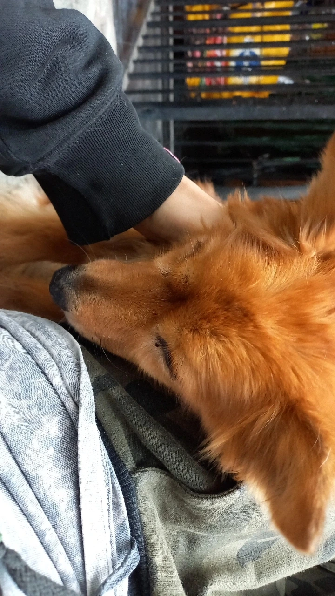

La vida de Lari
Lari nació en una pequeña camada de cachorros en una soleada mañana de primavera. Desde el principio, se notaba que era diferente a sus hermanos. Mientras que los otros cachorros jugaban y corrían por todas partes, Lari prefería acurrucarse en el regazo de su madre y recibir todo el cariño que podía. Desde ese momento, quedó claro que Lari era una perrita especial.
A medida que crecía, Lari demostraba cada vez más su amor por los mimos y las caricias. Sus dueños la mimaban constantemente, y ella retribuía su amor con lealtad inquebrantable. No pasaba un día sin que Lara buscara la atención de su familia, poniendo su hocico suavemente bajo sus manos hasta que le acariciaran la cabeza. Era imposible resistirse a su encanto. A pesar de ser una perrita cariñosa y amable, Lari tenía una aversión profunda por los gatos. Nunca se llevó bien con esos felinos astutos que se atrevían a merodear por su territorio. Cualquier intento de amistad por parte de un gato era recibido con gruñidos y ladridos, y Lara defendía su hogar con fiereza cuando uno se acercaba. Lari siempre fue una perrita que disfrutaba de la tranquilidad. Le encantaba pasar las horas tumbada al sol en el jardín o en su cómoda cama. Los días de lluvia eran sus favoritos, ya que podía escuchar el suave sonido de las gotas golpeando las ventanas mientras se acurrucaba junto a su familia. No era fanática de los ruidos fuertes ni de las aglomeraciones, prefería la paz y la serenidad.
A lo largo de los años,Lari vivió una vida feliz junto a su amada familia. Siempre en busca de cariño y mimos, encontró en sus dueños a los compañeros perfectos para satisfacer su necesidad de afecto. A pesar de su aversión por los gatos y su amor por la tranquilidad, Lara era una perrita que llenaba de alegría y amor el hogar en el que vivía.
A medida que envejecía, Lari siguió siendo una fiel amiga y compañera, y su legado de buscar cariño y disfrutar de la tranquilidad perduró en el corazón de todos los que la conocieron. Su historia es un recordatorio de cómo un pequeño ser peludo puede traer tanta felicidad a nuestras vidas a través de su amor incondicional y su deseo de ser amado. Lari, la buscadora de cariño, siempre será recordada con cariño y gratitud por su familia.